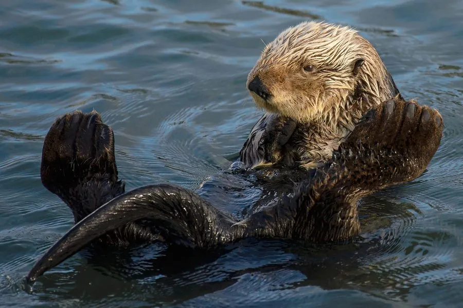

哺乳动物 · 动物界
海獭 Enhydra lutris

北太平洋沿岸的海生鼬科动物，仰浮水面用石头敲开海胆，毛皮致密防水，因历史上遭大量捕猎而被列为濒危。
- 分类
- 门脊索动物门纲哺乳纲目食肉目科鼬科属海獭属
- 栖息环境
- 北太平洋沿岸的海藻林、岩礁与浅海
- 地理分布
- 日本北部、俄罗斯远东、美国阿拉斯加至加利福尼亚沿岸
- 保护级别
- IUCN 濒危（EN）；非中国分布物种
物种志
海獭体长 1.2–1.5 米，体重 15–45 kg，雄性略大。它的身体细长，头部小而圆，后肢特化为宽大的鳍足，尾巴扁平如桨；毛皮呈深褐色，密度极高，每平方厘米约有 10 万根毛发，能在冷海中保持体温。
海獭分布于北太平洋沿岸，从日本北部、俄罗斯远东到美国阿拉斯加和加利福尼亚，生活在海藻林和近岸浅海。它以海胆、贝类、螃蟹和鱼类为食，常仰浮在水面，把石头放在胸前敲开海胆，是少数会使用工具的动物。海獭每天需进食相当于体重 25% 的食物。雌性妊娠期约 6 个月，每胎 1 仔，寿命约 15–20 年。由于 18–19 世纪的毛皮贸易，海獭数量锐减，目前被列为濒危，保护工作使部分种群有所恢复。
形态与习性
- 食性海胆、贝类、螃蟹与鱼类
- 体长1.2–1.5 m
- 体重15–45 kg
- 寿命15–20 年
- 繁殖妊娠约 6 个月，每胎 1 仔
- 毛发每平方厘米约 10 万根
趣味知识
- 海獭仰浮在水面，把石头放在胸前敲开海胆。
- 它的毛皮每平方厘米约有 10 万根毛发，能防水保温。
- 海獭每天要吃掉相当于体重 25% 的食物。